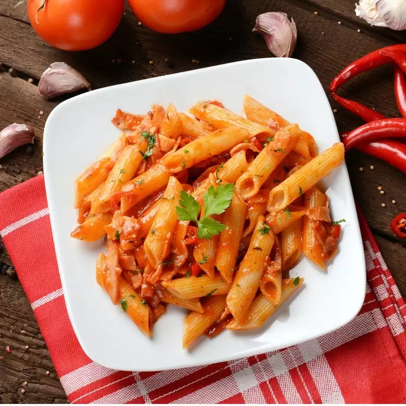

Pasta

Pasta is a type of food made from a mixture of flour, eggs, and water that is formed
into different shapes and then boiled. Spaghetti, macaroni, and noodles are types of pasta.
Ingredients
Steps
- Fill a large saucepan with water, put the lid on and bring to the boil over a high heat.
- Add a good pinch of sea salt.
- Once the water is boiling, stir in the pasta.
- Cook the pasta according to the packet instructions.
To tell if your pasta is cooked, try a piece about a
minute or so before the end of the cooking time. It’s
ready when it’s soft enough to eat, but still has a bit
of bite.
The Italians say ‘al dente’.
- Scoop out a mugful of the starchy cooking water and set aside. This will help emulsify the pasta sauce.